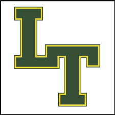
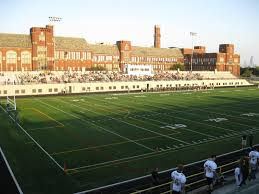
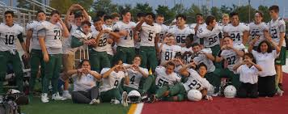
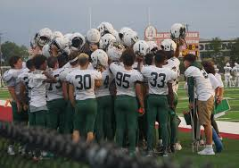

My Football Life

I started playing at a pretty young age, I started flag football in 5th grade for my park, Hollywood Park. I've always wanted to play padded football when i was young
but my mom didn't let me because she thought it was too dangerous. Since I couldn't play football I decided to play basketball, which helped me a lot with footwork for football.
My chance to play actual football came during my freshman year at Lane Tech, I had 8 total touchdowns for JV and I got to start a couple games on varsity too.
Lane Tech Football
  Jv and Varsity
I was forunate enough to play on both JV and Varsity, being the only freshman to start on varsity it was an honor and overall it was a very good experience.